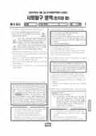

문제지

시험지 만들기준비하고 있어요. 열리면 아래 탭에서 바로 쓸 수 있어요.

시험지를 먼저 풀어 보세요. 점수와 인원 수치는 흐리게 가려 뒀어요.
| 등급 | 표준점수 이상 | 인원(명) | 비율 |
|---|---|---|---|
| 1 | 69 | 1,281 | 5.41% |
| 2 | 65 | 1,366 | 5.77% |
| 3 | 58 | 3,214 | 13.58% |
| 4 | 52 | 4,358 | 18.41% |
| 5 | 46 | 4,231 | 17.87% |
| 6 | 41 | 3,800 | 16.05% |
| 7 | 38 | 4,058 | 17.14% |
| 8 | 37 | 507 | 2.14% |
| 9 | 30 | 860 | 3.63% |
시·도교육청 공개 자료
출처: 시·도교육청이 공개한 전국연합학력평가 성적 분석·통계자료(공개 자료 보기).
EBSi 응답자 기준으로 가장 많이 틀린 문항은 13번(2점)이고, 오답률은 66.9%입니다. 오답률 50%를 넘은 문항은 3개입니다.
| 순위 | 문항 | 배점 | 오답률 | 정답 | 많이 고른 오답 |
|---|---|---|---|---|---|
| 1 | 13번 | 2점 | 66.9% | ④ | ③ 30.7% |
| 2 | 14번 | 2점 | 59.8% | ① | ② 20.5% |
| 3 | 2번 | 3점 | 59.1% | ⑤ | ④ 34.6% |
| 4 | 15번 | 3점 | 47.2% | ③ | ⑤ 18.9% |
| 5 | 7번 | 2점 | 46.5% | ⑤ | ④ 15% |
| 6 | 3번 | 3점 | 46.5% | ③ | ⑤ 25.2% |
| 7 | 19번 | 3점 | 45.7% | ⑤ | ④ 22% |
| 8 | 8번 | 3점 | 40.2% | ④ | ② 15.7% |
| 9 | 9번 | 3점 | 35.4% | ② | ③ 13.4% |
| 10 | 16번 | 3점 | 31.5% | ④ | ② 10.2% |
| 11 | 18번 | 3점 | 30.7% | ② | ⑤ 10.2% |
| 12 | 12번 | 2점 | 25.2% | ④ | ⑤ 11.8% |
| 13 | 20번 | 2점 | 23.6% | ③ | ④ 11% |
| 14 | 6번 | 3점 | 22.8% | ① | ② 8.7% |
| 15 | 11번 | 3점 | 17.3% | ② | ⑤ 7.1% |
EBSi 가채점 응답자 기준 · 전 문항 중 오답률 상위 15문항
출처: EBSi 역대 등급컷·오답률 공개 화면. 가채점에 참여한 EBSi 이용자 응답이라 전체 응시자 정답률과는 다를 수 있습니다.
발행 기관: 시·도교육청(전국연합학력평가). 파일 위치: 이 사이트가 보관한 사본. 저작권은 발행 기관에 있습니다. 원본과 다르거나 게시 중단이 필요하면 연락처로 알려 주세요. 등급컷 출처 구분은 데이터 원칙에서 설명합니다.
막대 색은 역대 대비 난이도 · 진한 막대가 이 시험 · 막대를 누르면 그 회차로 이동
| 회차 | 1등급컷 | 표점 최고 | 1등급 표점 | 난이도 |
|---|---|---|---|---|
| 5월 학평2025년 고3이 시험 | — | — | — | — |
| 3월 학평2025년 고3 | 44 | 77 | 72 | 매우 어려움 |
| 10월 학평2024년 고3 | 50 | 65 | 65 | 매우 쉬움 |
| 7월 학평2024년 고3 | 47 | 72 | 70 | 보통 |
| 3월 학평2024년 고3 | 47 | 73 | 71 | 보통 |
| 10월 학평2023년 고3 | 50 | 64 | 64 | 매우 쉬움 |
| 7월 학평2023년 고3 | 47 | 71 | 69 | 쉬움 |
| 4월 학평2023년 고3 | 44 | 77 | 71 | 어려움 |
| 3월 학평2023년 고3 | 41 | 81 | 72 | 어려움 |
| 10월 학평2022년 고3 | 48 | 68 | 66 | 매우 쉬움 |
정치와 법은 응시자 23,675명, 표준점수 최고점 71점, 1등급 구분 69점이었고 오답률 50%를 넘은 문항은 3개였습니다.
가장 많이 틀린 13번(2점, 66.9%)은 게임기 매장을 운영하는 43세 갑과 17세 을의 거래 사례로 미성년자의 법률 행위를 판단하는 문항이었습니다.
14번(59.8%)은 국제 연합의 주요 기관(안전 보장 이사회 등)을 구별하는 문항, 2번(59.1%)은 수감 중 제기한 헌법 소원을 다룬 문항이었습니다.
국제 연합의 주요 기관(총회, 안전 보장 이사회, 국제 사법 재판소)은 의결 방식과 권한을 표로 정리해 두는 것이 효과적입니다.